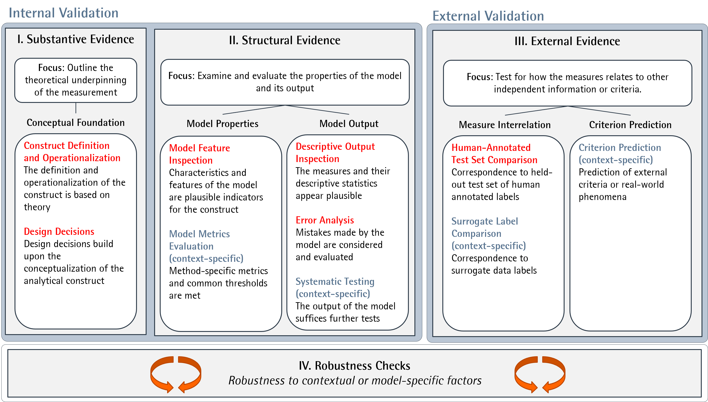

ValiText - A Validation Framework for Text-Based Measures of Social Constructs
1. Introduction
In this tutorial, we introduce the ValiText tool, a framework and instrument for validating text-based measures of social constructs. ValiText helps researchers to execute and document validation by providing conceptual and practical guidance for researchers (Birkenmaier, Wagner, and Lechner 2023).
Validation is a necessary requirement for any text analysis (Grimmer and Stewart 2013). Essentially, the purpose of validation is to ensure that what is to be measured (i.e., the numerical scores assigned to texts) correspond to the true1 nature of the construct being studied.
Data Quality is an important requirement for validity. Low quality data can significantly affect the validity of text-based measures. For instance, when the text data is incomplete, ambiguous, or misrepresentative, it becomes challenging to draw accurate inferences about social science phenomena. However, detecting these data quality issues can be difficult. ValiText helps researchers with a shared vocabulary denoting different validation steps, as well as practical checklists that can be downloaded and filled-out to document validation.
At its core, the ValiText tool can be used for any of the following tasks:
- Defining the key types of validation evidence that are required for sufficient validation
- Guide researchers which concrete validation steps to apply for their text-based research, and
- Provide a documentation template in the form of a checklist that can be used to document validation efforts effectively.
In this tutorial, we will begin by presenting the framework (Chapter 2), followed by a practical example of its use in measuring sexism in social media posts (Chapter 3), and finally conclude with a discussion (Chapter 4).
2. ValiText Tool
Validation is a critical task in text analysis and natural language processing. At its core, validation involves various activities to demonstrate that a method measures what it purports to measure (Cureton 1951; Repke, Birkenmaier, and Lechner 2024). However, validating text-based measures can be challenging (Krippendorff 2009).
Therefore, any empirical measure needs to be validated. One crucial problem in the validation of text-based measures, however, is the lack of conceptual clarity on how to conduct validation.
To provide practical guidance for researchers and users to conduct and communicate validation, ValiText offers a flexible and consistent approach to validation.
At its core, ValiText requires three types of validation evidence:
- Substantive Evidence: Requires outlining the theoretical underpinning of the measure.
- Structural Evidence: Requires examining and evaluating properties of the model and its measures.
- External Evidence: Requires testing how the measure relates to other independent information or criteria.
The framework is complemented by a checklist that defines and outlines empirical validation steps available to collect validity evidence for different use cases.
If you want to learn more about the framework and the checklist, please click on the respective section below or have a look at the corresponding paper.

Different checklists are available for different use cases, depending on the text-based methods used. The table below summarises the use cases, and provides download links to the checklists
| # | Use Case | Training Data Required | Known Output Categories | Description | Example | Checklist Download |
|---|---|---|---|---|---|---|
| A | Dictionaries | No | Yes | Assign scores to text units using predefined word lists | A dictionary assigns polarity values ranging from -1 to 1 to each known text unit | |
| B | (Semi-) Supervised Classification | Yes | Yes | Train a model to predict known output categories based on labelled data | A pretrained BERT model is fine-tuned on labelled social media posts and predicts “offensive” and “non-offensive” posts | |
| C | Prompt-based Classification Using LLMs | Yes | Yes | Ask (“prompt”) LLMs to assign labels to texts | A Mistral model is prompted to determine whether a text is “sexist” or “non-sexist” | |
| D | Topic Modelling | No | No | Assign topics without any labeled data | An LDA topic model generates 13 coherent topics |
3. Application and use case
We demonstrate the applicability of the tool by revisiting and documenting the validation steps from a study by Samory et al. (2021). In their study, Samory et al. (2021) rely on different types of supervised machine learning models to detect sexist social media posts within different social media datasets.
Detecting sexism is a challenging task due to its complex nature, as sexist language often manifests in subtle and nuanced ways. In their paper, Samory et al. (2021) investigate several strategies to enhance the measurement of such data. Since their study utilizes a labeled dataset (i.e., data with human-provided annotations), the focus shifts from exploring research questions to improving the model’s ability to classify texts.
Since their study utilizes supervised models, we completed the checklist “B: (Semi-) Supervised Classification”. We illustrate how the checklist can act as a documentation tool, providing a clearly structured overview over all relevant validation steps. Naturally, for other use cases, the tool can also guide validation conceptually, and assist in interpreting the metrics identified during validation.
Below, we provide the filled-out checklists for each overarching type of validation evidence. In each chapter, we highlight single validation steps and how ValiText can help to document and evaluate them. The full discussion of all validation steps can be found in the corresponding paper.
Substantive Evidence
Samory et al. (2021) engage with the literature on sexism and computational methods, highlighting definitional ambiguities and potential biases. They justify their operationalization by developing a codebook based on subdimensions of sexism and annotating training data for machine-learning models, using supervised methods like Logit, CNN, and BERT to compare performance. The authors also discuss data collection decisions, use of adversarial examples, and select the sentence level for analysis, while providing preprocessing details primarily for the Logit model.
Structural Evidence
Samory et al. (2021) provide structural evidence by evaluating both model properties and output. They inspect predictive model features (II.1), comparing the most predictive unigrams across datasets and methods, noting that models trained on adversarial examples demonstrate greater robustness. For model output evaluation, they conduct error analysis (II.5) on misclassified examples using their BERT model, examining factors like model type, data origin, and coder agreement to identify systematic errors.
External Evidence
To demonstrate external evidence, Samory et al. (2021) primarily rely on the comparison of measures with a human-annotated test set (III.1). To calculate classification performance, they apply k-fold cross-validation and report F1 scores. The evaluation of F1 score is widely regarded as the most viable metric, as alternative metrics such as accuracy (i.e., the overall ratio of positive predictions) can be misleading when dealing with imbalanced data (Spelmen and Porkodi 2018).
4. Discussion
In summary, ValiText offers a structured and systematic framework for validating text-based measures of social constructs, such as sexism in online content. One of its major advantages is the clarity it brings to the validation process, enabling researchers to document and communicate their efforts effectively. By providing pre-structured checklists, ValiText reduces the cognitive load on researchers and promotes transparency, offering a uniform way to ensure that all critical aspects of validation—substantive, structural, and external—are addressed.
However, despite its strengths, the framework may have some limitations. For example, the reliance on self-assessment tools like ValiText might introduce subjectivity into the process, as researchers could be inclined to interpret the validation steps in a way that supports their results. Furthermore, the tool assumes a baseline level of understanding of validation practices, which could be a barrier for researchers new to the field of computational text analysis.
In practice, the use of ValiText in studies like that of Samory et al. (2021) demonstrates the value of having a clear, consistent approach to validating computational methods. However, the dynamic nature of social constructs like sexism poses a unique challenge. Constructs often evolve over time and across contexts, which raises questions about the generalization of validation practices across different studies and datasets.
References
Footnotes
Nevertheless, it’s important to acknowledge that the “true” nature of a text is inherently unobservable and can only be approximated. For instance, while we might interpret a certain text as positive or negative, these characteristics are not intrinsic to the text itself; they are inferred and open to subjective interpretation (Krippendorff 2009)↩︎